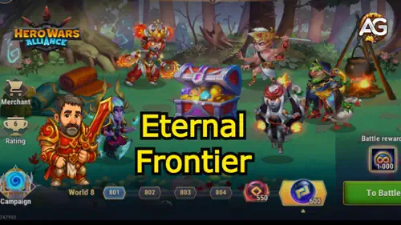
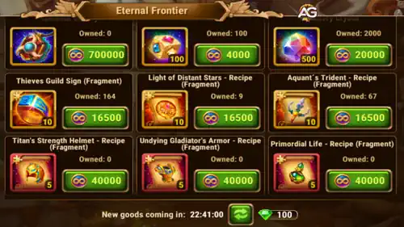

Fronteira Eterna é um dos modos de jogo PvE mais desafiadores e recompensadores em Hero Wars Alliance.
Projetado para testar seu conhecimento estratégico e a força dos seus heróis, esse modo apresenta 100 fronteiras divididas em mundos temáticos.
À medida que os jogadores avançam, os inimigos se tornam mais fortes e decisões mais difíceis precisam ser tomadas.
Este guia completo mostrará tudo o que você precisa saber para dominar esse recurso – incluindo recompensas, seleção de heróis, gerenciamento de energia, composição de equipe, dicas para maximizar o desempenho e estratégias para progresso a longo prazo.

Guia da Fronteira Eterna para Hero Wars Alliance, um jogo desenvolvido pela Nexters.
O que é a Fronteira Eterna?
Na Fronteira Eterna, sua jornada é dividida em Mundos, cada um composto por 100 Fronteiras.
Ao completar fronteiras, você ganha recompensas e, gradualmente, aumenta a exigência de força para suas equipes de heróis.
À medida que avança, você precisará de mais equipes para vencer as batalhas.
Após vencer batalhas, você recebe Moedas Eternas, Pedras Rúnicas e, eventualmente, Esferas Rúnicas, dependendo do seu progresso.
Você também desbloqueia o Baú de Recompensas AFK, que acumula recompensas com o tempo e oferece o melhor retorno a cada 24 horas.
Como Acessar a Fronteira Eterna
A Fronteira Eterna pode ser acessado a partir da tela principal do jogo assim que você atingir um determinado marco de progresso na campanha.
Este modo utiliza um sistema de energia único que se regenera diariamente, separado da energia da campanha normal.
Você não precisa gastar esmeraldas ou moedas de Outland, tornando-o um excelente recurso gratuito para progresso a longo prazo.
Tipos de Recompensas
Imagem
Recompensa
Descrição
Moedas Eternas
Obtidas em batalhas normais e no baú de recompensas AFK. Usadas na Loja da Fronteira para comprar itens e recursos valiosos.
Pedras Rúnicas
Obtidas em fronteiras de alta dificuldade. A quantidade aumenta conforme mais equipes são necessárias para cada batalha.
Esferas Rúnicas
Concedidas apenas ao completar um mundo inteiro. O número de esferas aumenta quando mais equipes são usadas ao longo do mundo.
Progresso dos Mundos e Recompensas
Mundo
Fronteiras
Equipes
Esfera Rúnica
Pedra Rúnica
1-5
1-500
1
x1
x14.000
6-10
501-1.000
2
x2
x15.850
11-15
1.001-1.500
3
x3
x17.700
16-20
1.501-2.000
4
x4
x19.550
21-25
2.001-2.500
5
x5
x21.400
Sistema de Pular Batalhas
A Fronteira Eterna permite que os jogadores pulem batalhas se atenderem a certos requisitos de poder. Pular economiza tempo e ainda concede todas as recompensas, exceto pela história (lore).
Você precisa completar algumas batalhas manualmente antes que a opção de pular volte a ficar disponível.
O poder do seu primeiro esquadrão determina a elegibilidade para pular nos primeiros níveis.
Nenhum herói morre permanentemente; você pode repetir as batalhas quantas vezes for necessário.
O baú de recompensas acumula itens mesmo quando você está offline (AFK).
Requisitos para Pular
Limiares de poder por nível para pular (apenas o primeiro time):
Nível 601: 550k
Nível 701: 660k
Nível 801: 715k
Nível 901: 770k
Nível 1001: 825k
Quando seu primeiro time atinge 825k de poder, você pode pular qualquer conteúdo que exija apenas um esquadrão. Níveis mais altos (Tier 8 e acima) exigem múltiplos esquadrões.
Tier 8 e Acima: Estratégia de Pular com Múltiplos Times
O Tier 8 começa no nível 3501 e exige todos os 8 times. Para pular até o nível 3801, você precisará de:
6 equipes com pelo menos 825k de poder cada
1 equipe com 715k
1 equipe com 275k
Poder combinado total necessário: 5,94 milhões entre os 8 times.
Dicas para a Loja da Fronteira Eterna
Use as Moedas Eternas com sabedoria! A Loja da Fronteira oferece itens valiosos, incluindo os primeiros talismãs de heróis. No entanto, os primeiros talismãs de alguns heróis não aparecem na loja: Lara Croft, Polaris, Guus, Tartarugas Ninja, Peech.

Loja da Fronteira Eterna, Hero Wars Alliance.
O que priorizar na loja:
Primeiros Talismãs para heróis do meta
Itens laranja exclusivos (não disponíveis em outros lugares)
Cristais de Maestria (para evolução de talismãs)
Pedras da alma do herói Soleil (somente para desbloqueá-lo)
O que NÃO comprar
Itens laranja disponíveis na campanha ou em outras lojas
Metacubos (disponíveis no Porto)
Pedras da alma básicas de heróis (a menos que seja para desbloqueio)
Cristais de Maestria quando estiverem disponíveis via eventos
Dicas Avançadas
Seu time mais forte deve sempre estar na primeira posição do esquadrão.
Tenha paciência com as recompensas – o baú AFK oferece retornos melhores com o tempo.
Fique atento às mudanças diárias na loja – talismãs e itens mudam.
Só evolua talismãs de heróis que você realmente usa.
Jogadores free-to-play devem evitar gastar moedas com compras não essenciais.
Considerações Finais – Por Que Vale a Pena Jogar a Fronteira Eterna
A Fronteira Eterna é mais do que apenas mais um modo PvE – é uma fonte constante de recursos para heróis, um desafio tático e um sistema de progressão a longo prazo.
Para jogadores que desejam evoluir suas contas de forma consistente, é essencial jogar esse modo diariamente. As recompensas são generosas, a curva de dificuldade é equilibrada
e o modo incentiva a criatividade na formação de equipes.
Torne-o parte da sua rotina diária, e você verá progresso nas evoluções dos seus heróis, reservas de ouro e conhecimento de jogo.
Seja você um jogador free-to-play ou pagante, a Fronteira Eterna oferece algo para todos – e quem dominá-lo terá uma grande vantagem no PvE e no PvP.
Precisa de ajuda para otimizar suas equipes na Fronteira Eterna? Junte-se à nossa comunidade para estratégias e dicas em tempo real!
Sugestões de Vídeo:
Vídeo: A NOVA Fronteira Eterna no Hero Wars Alliance: Missões, Recompensas e Segredos!
Você gostou do nosso Guia da Fronteira Eterna para Hero Wars Mobile? Há algo que não entendeu ou gostaria de sugerir mudanças? Convidamos você a se juntar à nossa sessão de comentários na página do Alexandre Games Blog. Não hesite em expressar sua opinião, clarificar suas dúvidas e compartilhar sua sugestões. Clique no botão abaixo para começar:


") 7 Melhores Heróis de Controle em Hero Wars Alliance (2025)
7 Melhores Heróis de Controle em Hero Wars Alliance (2025)
 Guia de Rework de Krista e Lars: Sinergia Explicada para Hero Wars Alliance
Guia de Rework de Krista e Lars: Sinergia Explicada para Hero Wars Alliance
") 7 Melhores Guerreiros em Hero Wars Alliance para 2025 (Meta Revelado)
7 Melhores Guerreiros em Hero Wars Alliance para 2025 (Meta Revelado)
 Top 7 Heróis de Cada Facção em Hero Wars Alliance 2025
Top 7 Heróis de Cada Facção em Hero Wars Alliance 2025
 Como Jogar Hero Wars Alliance no PC e Mac: Guia Completo!
Como Jogar Hero Wars Alliance no PC e Mac: Guia Completo!